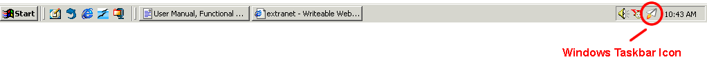
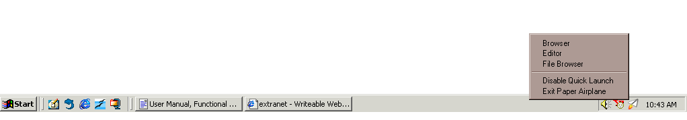

| | |
Table of Contents | Last | Next
Starting and Stopping Paper Airplane
Starting Paper Airplane
Any of the following ways can be used to start Paper Airplane:
Desktop Screenshot
Start Menu

Windows Taskbar Icon Circled
Stopping Paper Airplane
To close a browser or editor window simply click the X button in the upper-right corner of the window:
Close Button in Corner of Window
To close all browser and editor windows that are being shown in one action, click on the File menu and select Exit. This will close all browser and editor windows that are open.
Even when you close browser and editor windows in both of these ways, the Paper Airplane icon continues to be shown in your Windows Taskbar. The reason for this is two-fold. First, it allows the browser to be loaded quickly to enhance browsing. Second, it means that your computer remains active in the peer-to-peer Two Way Web network even when you are not viewing web pages. To fully close down Paper Airplane and sign-out of the Two Way Web, right-click on the Paper Airplane icon in the Windows Taskbar:

Right-Click Menu for Windows Taskbar Icon
Select the Exit Paper Airplane option to fully leave the Two Way Web and shut-down Paper Airplane.